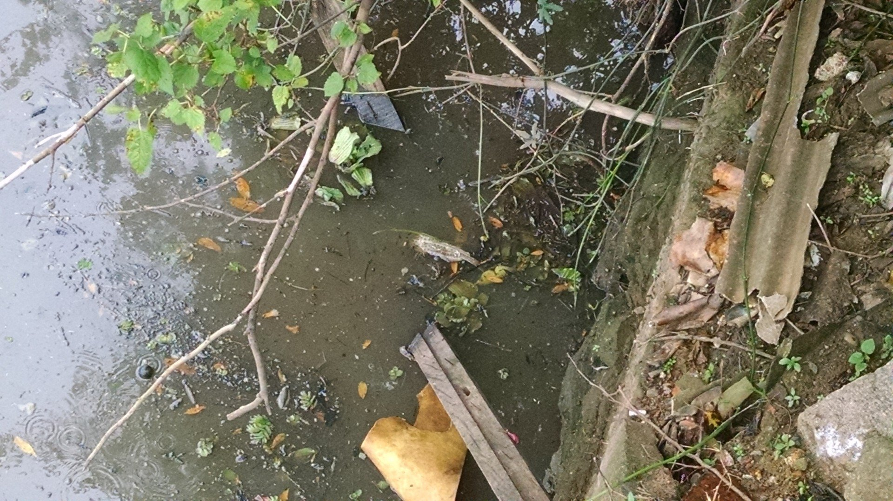

.svg)
O Saneamento básico é o conjunto de medidas adotadas em uma região, em uma cidade, para melhorar a vida e a saude dos habitantes impedindo que fatores fisicos de efeitos nocivos possam prejudicar as pessoas no seu bem-estar físico mental e social.
O abastecimento de água potável, o esgoto sanitário, a limpeza urbana, o manejo de resíduos sólidos e drenagem das águas pluviais são o conjunto de serviços de infra-estruturas e instalações operacionais que vão melhorar a vida da comunidade. É importante a preocupação dos governantes garantirem o bem estar e a saúde da população desde que também sejam tomadas medidas para educar a comunidade para a conservação ambiental
Um dos problemas mais graves nas grandes periferias do Brasil é justamente a falta do saneamento básico e é este um dos fatores mais importantes da saúde porque de acordo com o meio onde vivem podem contrair e transmitir muitas doenças, inclusive por exemplo, doenças respiratórias, vermes e tantas outras. Portanto o acesso à água potável e algumas condições de higiene, muitas doenças podem ser evitadas diminuindo assim o custo com tratamentos.
Analisando-se o período de 2005 a 2015, o estudo mostrou que o país investiu, em média, R$ 9,264 bilhões por ano. Esses investimentos foram feitos em obras de manutenção e expansão das redes de água e esgoto nas cidades brasileiras, sustentaram quase 142 mil empregos anuais e geraram R$ 11,025 bilhões / ano de renda na economia brasileira.

Moradores de áreas sem acesso à rede de distribuição de água e de coleta de esgotos têm uma redução do atraso escolar, ou seja, uma escolaridade menor significa uma perda de produtividade e de remuneração das gerações futuras. Somente o custo desse atraso escolar devido à falta de saneamento alcançou R$ 16,6 bilhões em 2015.

Moradores de áreas sem acesso à rede de distribuição de água e de coleta de esgotos têm uma redução do atraso escolar, ou seja, uma escolaridade menor significa uma perda de produtividade e de remuneração das gerações futuras. Somente o custo desse atraso escolar devido à falta de saneamento alcançou R$ 16,6 bilhões em 2015.

Os dados oficiais mostram que, em média, a cada afastamento as pessoas ficaram longe de suas atividades por 3,32 dias em média. A economia com a melhoria das condições de saúde da população brasileira projetada para o período 2015 a 2035, tomando por base os afastamentos do trabalho e internações ocorridos em 2015, deve ser em média de R$ 362 milhões. Em vinte anos (2015 a 2035), considerando o avanço gradativo do saneamento, o valor presente da economia com saúde, seja pelos afastamentos do trabalho, seja pelas despesas com internação no SUS, deve alcançar R$ 7,239 bilhões no país.

Tendo como base os dados da PNAD 2015, o estudo revelou um impacto expressivo do saneamento sobre o valor dos ativos imobiliários e sobre a renda gerada pelo setor. Considerando dois imóveis em bairros similares e que se diferenciam apenas pelo acesso ao saneamento, aquele que estava ligado às redes de distribuição de água e de coleta de esgoto poderia ter seu valor elevado em quase 14%. Espera-se que a universalização do saneamento traga acesso à água tratada a mais 33,1 milhões de moradias e coleta e tratamento de esgoto a 49,1 milhões de habitações até 2035.
Lançado desde 2009 pelo Instituto Trata Brasil, o novo Ranking do Saneamento Básico das 100 maiores cidades do país é mais uma vez publicado para chamar atenção dos preocupantes indicadores de saneamento nas cidades brasileiras. Feito em parceria com a GO Associados, especializada em saneamento básico, o trabalho usa dados oficiais do Sistema Nacional de Informações sobre Saneamento (SNIS), Ministério das Cidades – ano base 2015.
DUQUE DE CAXIAS é um município da unidade federativa Rio de Janeiro. Seu território é composto 100% pelo bioma Mata Atlantica. O IDHM de DUQUE DE CAXIAS é 0.711. O município não possui Política Municipal de Saneamento Básico e não possui Plano Municipal de Saneamento Básico.

NOVA IGUAÇU é um município da unidade federativa Rio de Janeiro. Seu território é composto 100% pelo bioma Mata Atlantica.O IDHM de NOVA IGUAÇU é 0.713.

GRAVATAÍ é um município da unidade federativa Rio Grande do Sul. Seu território é composto 29% pelo bioma Mata Atlantica e 71% pelo bioma Pampa. O IDHM de GRAVATAÍ é 0.736. O município não possui Política Municipal de Saneamento Básico e não possui Plano Municipal de Saneamento Básico
Julia Dinis
Meu nome é Julia. tenho 16 anos e moro em Betim-MG. Estudo na Escola Estadual Conselheiro Afonso Pena(EECAP), cursando o 2° ano a tarde. Gostaria de falar um pouco sobre o meu desenvolvimento desse site e sobre o meu conhecimento adquirido através das aulas remotas com a Bruna Dolabella, com a ajuda da plataforma de ensino ASAP. No começo fiquei com muita dificuldade pois era muito novo pra mim esse tipo de conhecimento como ainda é,tive que assistir as aulas gravadas várias e várias vezes pra entender, tem o grupo no WhatsApp e o plantão de dúvidas que é ótimo por sinal. E através de todo esse esforço eu desenvolvi esse site sobre Água limpa e Saneamento (a ODS 6). espero que gostem.